Home / Docs / CINEOSIS · in the crash lab
Production notes
CINEOSIS · in the crash lab
The family performs all 45 signs over 59 measured worlds, each sign its own shot list of cameras, cuts, mirrors and time maps. Watch the film.
Production notes · CINEOSIS · Crash Lab: findings
What it is
45 signs, 16742 frames of edit over 59 measured worlds.
45 signs, 16742 frames of edit over 59 measured worlds. Each sign was judged by an independent critic from eight stills against its test and counterfeit. First round: 12 met the bar, 26 weak, 7 missed.
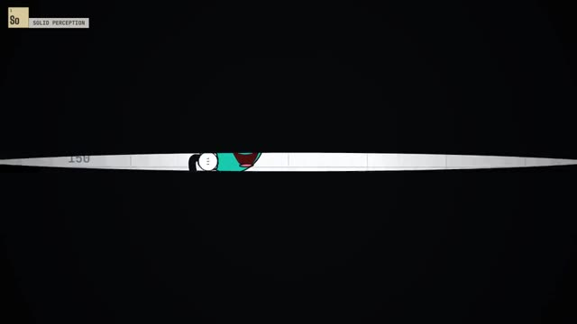
0:15 the start of this part, just after its card
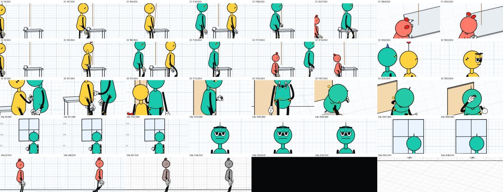
critic sheet Frames from one passage and nothing else.1 So · Solid perception — 5 shots, 326 frames; worlds: so1.
The perceiver is made by alternation: her eyes (eyelid mask, her own body removed) and then her body held at the hub while the others orbit. Critic: WEAK, last third lost the privileged body. Repair: ends held on Bola at the hub, then back to her eyes.
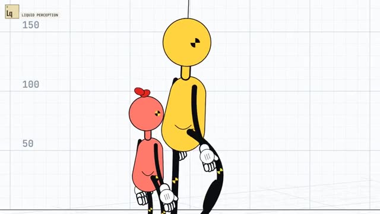
0:31 the start of this part, just after its card
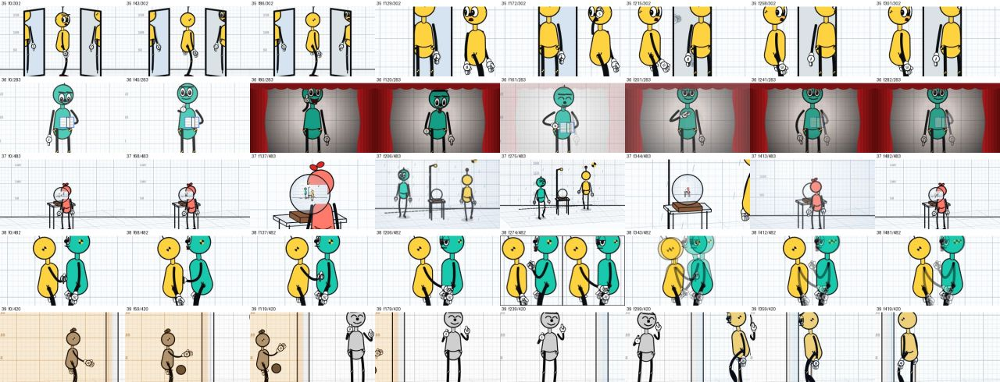
critic sheet Frames from one passage and nothing else.2 Lq · Liquid perception — 1 shots, 360 frames; worlds: lq1.
No cut at all: the camera's target is handed from Bola to Shim to Dot with a 2-second blend, so each centre forms and passes on. Critic: WEAK, scale jump read as a cut. Repair: camera height locked; one unbroken move.
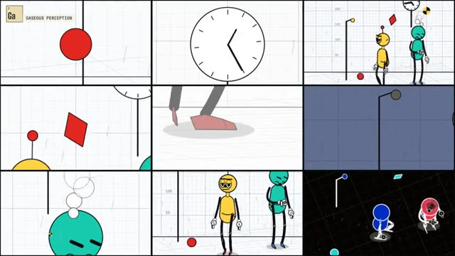
0:47 the start of this part, just after its card
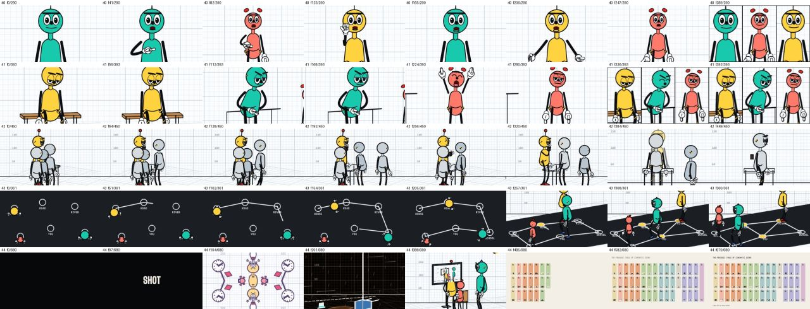
critic sheet Frames from one passage and nothing else.3 Ga · Gaseous perception — 2 shots, 246 frames; worlds: ga1.
Nine windows at different speeds, directions and scales; the walking body is one panel of nine, then one layer of three. Critic: MET, final layer centred the body. Repair: body layer offset from the clock.
4 Ic · Icon — 3 shots, 278 frames; worlds: ic1.
The candle is never shown, so there is no reverse shot to turn the face into information. The push-in ends on a hold past the point of information. Critic: MET, opening wide situated the face. Repair: opens on the face.
5 Dv · Dividual — 9 shots, 351 frames; worlds: dv1.
The wave of surprise is timed by each extra's position, so it travels as one affect. The single face comes last and carries the group. Critic: WEAK, ended on one face. Repair: ends on a pan across the whole crowd.
6 As · Any-space-whatever — 3 shots, 300 frames; worlds: as1.
The film starts after the only person has left: rain, fog, light and fallen things, with the grid of the lab dissolving. Critic: WEAK, exit beat read as narrative. Repair: starts after he has gone; denser fog.
7 Sy · Symptom — 5 shots, 269 frames; worlds: sy1.
The act comes before any plan: a sniff, a snap lunge, eight bites with the head driving into the food. Low, shaking, red. Critic: WEAK, act occluded. Repair: two-shot of the devouring and the recoil.
8 Fe · Fetish — 3 shots, 264 frames; worlds: fe1.
The camera never leaves the object. The hand enters its frame and stops short, so the charge is measured by a gap of a few centimetres. Critic: MET, charge rested on the glow alone. Repair: glow flares at the near touch.
9 Or · Originary world — 4 shots, 413 frames; worlds: or1.
The place is shown before and after the figure and the last shot repeats the first: the ground outlasts the body that crosses it. Critic: MISSES, no pull of the ground on the body. Repair: he sinks into the mud and is gone; fences fall.
10 Il · Index of lack — 6 shots, 323 frames; worlds: il1.
The gap is a crate that twitches. Her own action (lifting it) is the disclosure, and the disclosure turns her from search to care. Critic: MET, reorientation soft. Repair: kept.
11 Ie · Index of equivocity — 5 shots, 420 frames; worlds: ie_a, ie_b.
Two worlds identical except for the onlooker. The gesture is filmed only once, then shown beside both of its situations, and neither is chosen. Critic: WEAK, second situation not legible. Repair: split panels reframed so the onlooker is clear.
12 Ve · Vector — 6 shots, 439 frames; worlds: ve1.
Every shot is tight on one thread. The single wide shot comes last and draws all three paths on the floor as one broken line. Critic: WEAK, strands disclosed by lines, not by people. Repair: kept; the critic misread the key as a box.
13 Mi · Milieu — 4 shots, 333 frames; worlds: mi1.
The first image is the whole situation from high and far; the camera goes down to the people only after, and climbs back out. Critic: MET, no date or place. Repair: kept.
14 Bi · Binomial — 16 shots, 331 frames; worlds: bi1.
Shot lengths fall from 30 frames to 6 as the two close in; the only two-shot is the meeting at the line. Critic: WEAK, push read as a handshake. Repair: strain and shiver on the push.
15 Im · Imprint — 8 shots, 347 frames; worlds: im1.
Cup, face and passers-by are cut in a tightening loop, each insert closer than the last, so the pressure is visible before the release. Critic: WEAK, release too small in stills. Repair: the throw is marked.
16 Pl · Plastic figure — 5 shots, 286 frames; worlds: pl1.
The fight itself is never shown. The shoved table, the cup breaking and the candle going out stand in for it. Critic: MISSES, insert unreadable. Repair: cup insert legible; the exit is not shown.
17 Th · Theatrical figure — 5 shots, 378 frames; worlds: th1.
The fight is staged twice as theatre (swings that never land, hits that are acted) and the real confrontation is deferred into a bow. Critic: WEAK, no real action outside the show. Repair: kept (disagreement: the bow is the deferral).
18 Ma · Mise en abyme — 3 shots, 302 frames; worlds: ma1.
The screen shows the shot itself, five levels deep. The camera pushes into the screen until the frame and the framed swap. Critic: WEAK, push-in stopped short. Repair: push continues until the screen fills the frame.
19 Su · Figure of the sublime — 4 shots, 499 frames; worlds: su1.
The camera gives the climb the full heroic treatment (low angle, slow motion, a gong); the last wide shot shows the puddle it was all for. Critic: MISSES, trivial need not shown. Repair: the puddle is shown first and last.
20 En · Figure of enfeeblement — 2 shots, 481 frames; worlds: en1.
She is a speck at the edge of the frame for the whole sign, and the second shot is wider still. Her acts change nothing in it. Critic: MISSES, no act. Repair: three failed pushes against a crate; the frame keeps widening.
21 Qu · Quotidian — 1 shots, 400 frames; worlds: qu1.
One static take of 17 seconds. Only the light outside the act changes, from morning to evening. Critic: WEAK, not heroic. Repair: kept.
22 Ll · Limit of the large form action-image — 3 shots, 332 frames; worlds: ll1.
The camera circles 180 degrees while the fighters stop, so their sides swap on screen; the action is delayed into a question and then an offered hand. Critic: WEAK, question not drawn from the milieu. Repair: kept.
23 Ls · Limit of the small form action-image — 3 shots, 361 frames; worlds: ls1.
Two lines in split screen; the one wide shot shows them crossing the same mark at different moments, and the split resumes as if nothing happened. Critic: WEAK, shared shot gave an answer. Repair: kept (disagreement: the operation asks for the shared moment).
24 Xl · Limit of the action-image (extreme limit) — 3 shots, 316 frames; worlds: xl_a, xl_b.
Both modes are shown at once, then laid over each other, then the bodies are removed; what remains is the box and the question. Critic: WEAK, the ? stated the enigma. Repair: ? removed.
25 Rd · Rich dream — 6 shots, 463 frames; worlds: rd1, rd2.
The entry is a wavering dissolve from a sleeping face; the dream uses kaleidoscope, rotation, reversed superimposition and colour; the exit is a white flash onto the same bench. Critic: MET, exit weaker than entry. Repair: exit mirrors the entry: wavering dissolve onto the face.
26 Rs · Restrained dream — 3 shots, 278 frames; worlds: rs_a, rs_b.
Straight cuts on an unchanged camera: the switch to the dream world and back is invisible. Only the cup that stays in the air and the clock running backwards mark it. Critic: WEAK, impossibility too small. Repair: the released cup slowly rises.
27 Mw · Movement of world — 5 shots, 388 frames; worlds: mw1.
Bodies, furniture, lamp, ball and clock share one beat, and the camera sways and cuts on it too. There is no entry, no exit, and nobody watching. Critic: MET, dancers move themselves. Repair: kept.
28 Sd · Strong destiny — 5 shots, 434 frames; worlds: sd_p, sd_f.
Hold on the face, a wavering dissolve to a sepia past (the knock and the broken cup), a wavering dissolve back, and the past drives the next act: she points at him. Critic: MET, no affect beat on return. Repair: face close-up on return.
29 Wd · Weak destiny — 7 shots, 450 frames; worlds: wd_p, wd_m.
Fragments of a farewell are cut in without any marker, from three positions, and stop before the letter is read. The present shot outlasts them and nothing happens in it. Critic: WEAK, fragments unmarked. Repair: stronger faded grade and grain.
30 Fp · Forking paths — 5 shots, 500 frames; worlds: fp0, fp_l, fp_r, fp_r2, fp0b.
The frame splits at the fork and splits again inside one branch; the last shot returns to the fork with one thing changed (a hat), so no branch is the true one. Critic: WEAK, forks not marked as past. Repair: kept (disagreement).
31 Mk · Mark — 4 shots, 357 frames; worlds: mk1.
Three identical terms in the same framing, each closed by the bell; the last shot is the cup alone, waiting for a fourth. Critic: WEAK, no inference shown. Repair: final hold on the three coins in the cup.
32 Dm · Demark — 7 shots, 343 frames; worlds: dm1.
The series is set up at speed; the fourth term is a known term that cannot be there: a second Bola while the first is still in the room. Critic: WEAK, aberrant term missed in stills. Repair: longer hold on the two Bolas.
33 Sb · Symbol — 6 shots, 336 frames; worlds: sb1.
The key is centred in every shot: a gift, a lock, a theft, a placement, a gathering. The one object carries several relations at once. Critic: MISSES, object never isolated. Repair: ends on the key alone, no hands.
34a Op · Opsign — 2 shots, 371 frames; worlds: op1.
Three long static views: the man from behind, his face, the window. No score, no cut on an event, and the look never turns into action. Critic: MET, empty window; face insert. Repair: rain on the window; face insert removed.
34b Sn · Sonsign — 3 shots, 276 frames; worlds: sn1.
The image freezes, then goes to black, then shows an empty corner, while a piano phrase repeats from somewhere. The sound is the situation; nobody answers it. Critic: MET, opening walk told a story. Repair: opens on the frozen listener.
35 Mf · Mirrors face to face — 2 shots, 301 frames; worlds: mf1.
Real reflections, five deep, each a few frames late; the second mirror lags further, so the copies no longer agree with each other or with her. Critic: WEAK, one double only. Repair: mirrors face each other; a receding, lagging row.
36 Lo · Limpid and opaque — 1 shots, 260 frames; worlds: lo_r, lo_p.
Rehearsal and performance of the same gesture are crossed so that one clears as the other clouds; by the end both are on screen at once and neither is the original. Critic: WEAK, whole-frame switches. Repair: one continuous exchange.
37 Se · Seed and environment — 5 shots, 483 frames; worlds: se1, se2.
The globe contains the world with the rain, the world contains a globe that contains the girl looking into it; the camera passes into each and comes out where it began. Critic: MET, cut into the world. Repair: kept (the push fills the frame before the cut).
38 Pp · Peaks of the present — 4 shots, 482 frames; worlds: pp_a, pp_b.
The same moment is shown twice with different outcomes, then side by side, then superimposed. No flashback frames either one, and neither is ranked above the other. Critic: WEAK, read as alternate takes. Repair: kept (disagreement: incompossible presents).
39 Sp · Sheets of the past — 4 shots, 529 frames; worlds: sp1.
One unbroken track through three rooms that coexist; each room keeps its own period in the grade, and the camera passes between them without a cut or a narrator. Critic: WEAK, linear order. Repair: cuts back through the rooms out of order.
40 Pf · Powers of the false — 7 shots, 290 frames; worlds: pf_b, pf_c, pf_a.
The speaker changes in mid-sentence while the gesture and the voice carry on; one cut is mirrored, and in the final three-way split one of them runs eight frames late. Critic: MISSES, testimony only. Repair: kept (disagreement: the test allows testimony passing between bodies).
41 Ba · Bodies of attitude — 4 shots, 393 frames; worlds: ba1.
Long static frames of three postures of waiting: slumped, leaning, fidgeting. Nothing is being prepared; the posture itself is what the shot holds. Critic: WEAK, faces carried the content. Repair: full-figure framing.
42 Bg · Bodies of gest — 2 shots, 450 frames; worlds: bg1.
Four identical rounds of bow, stamp, bow, staged frontally like a ceremony. In the last shot the stamping goes on while the clerk who does it fades out. Critic: WEAK, gesture buried in bodies. Repair: side view of the counter.
43 Br · Cinema of the brain — 2 shots, 361 frames; worlds: br1.
Shot from straight above, the floor reads as a diagram that draws itself. The figures move along its lines like steps of a thought, and nodes light where they arrive. Critic: MET, diagram became a route. Repair: kept.
44 Le · Lectosigns — 19 shots, 642 frames; worlds: so1, mf1, br1, ga1, ic1, bi1, sy1, mk1, qu1, th1, sb1, op1, rd2, sp1, as1, ma1.
Unlinked fragments of the other signs, single words, black frames and a nine-way split, with no rule given for joining them. The table appears without a title, made of frames from all forty-five pieces, and the film ends on a fragment after it, not on the table. Critic: MISSES, the table read the film. Repair: table untitled and not the end.

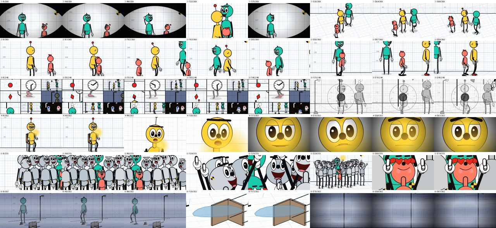
check frame CINEOSIS screen check 1
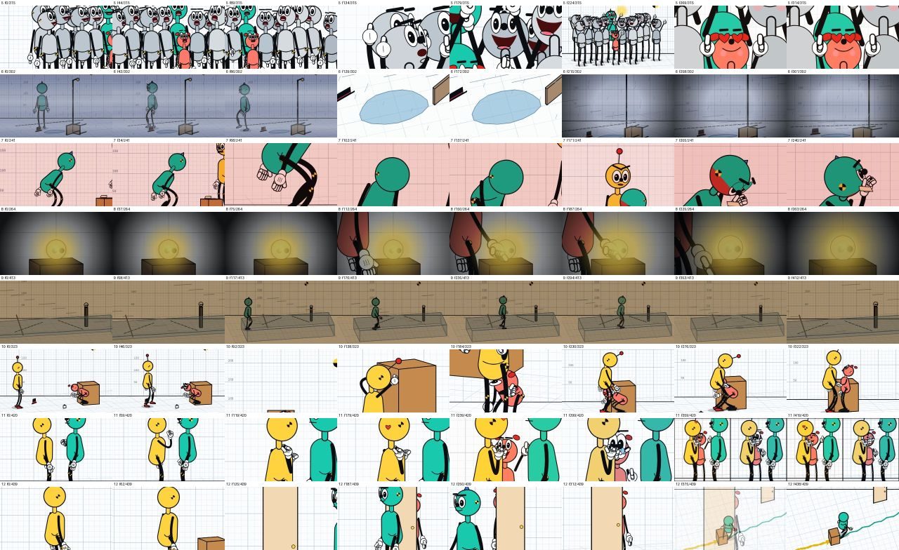
check frame CINEOSIS screen check 2
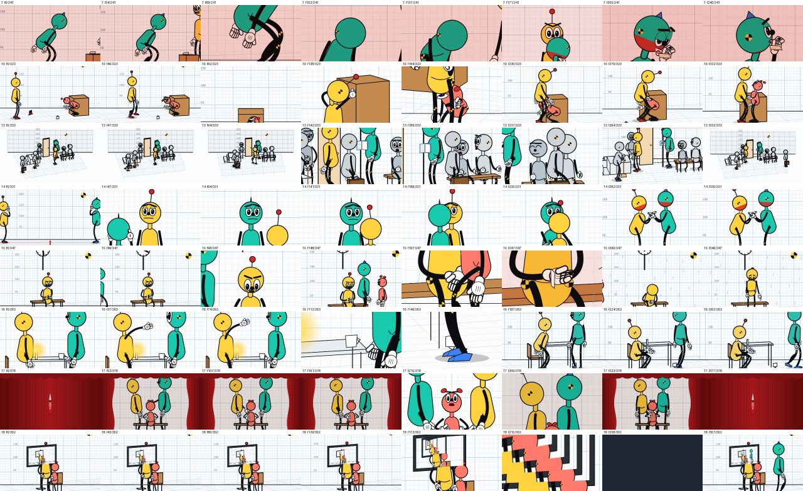
check frame CINEOSIS screen check 3
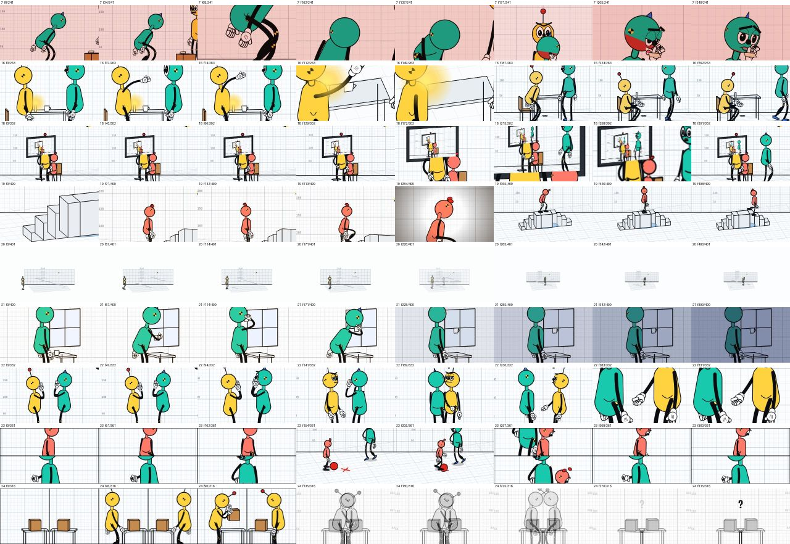
check frame CINEOSIS screen check 4
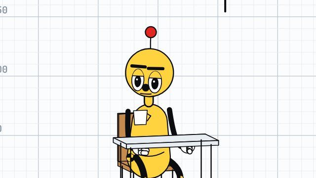
sign frame check Sign 26 frame check
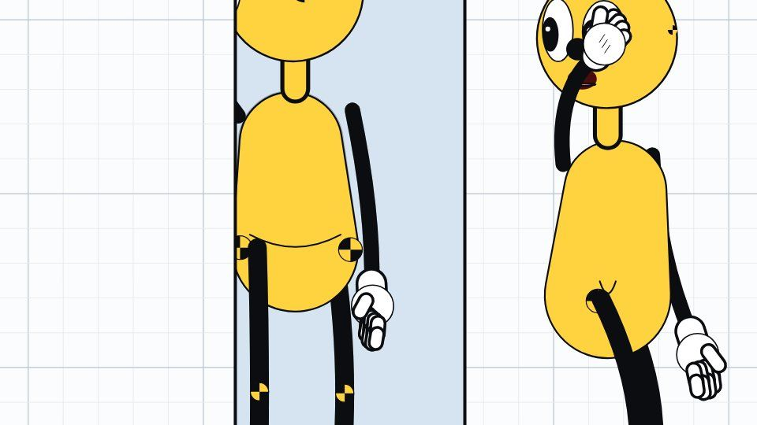
sign frame check Sign 35 frame check
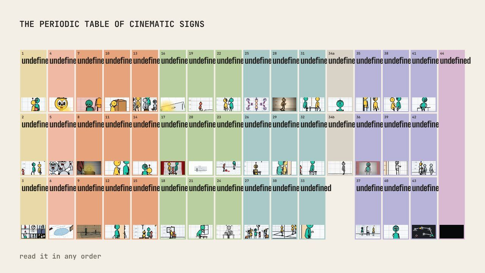
sign frame check Sign 44 frame check
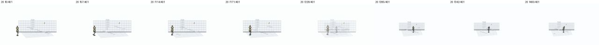
sign frame check Sign 20 frame check
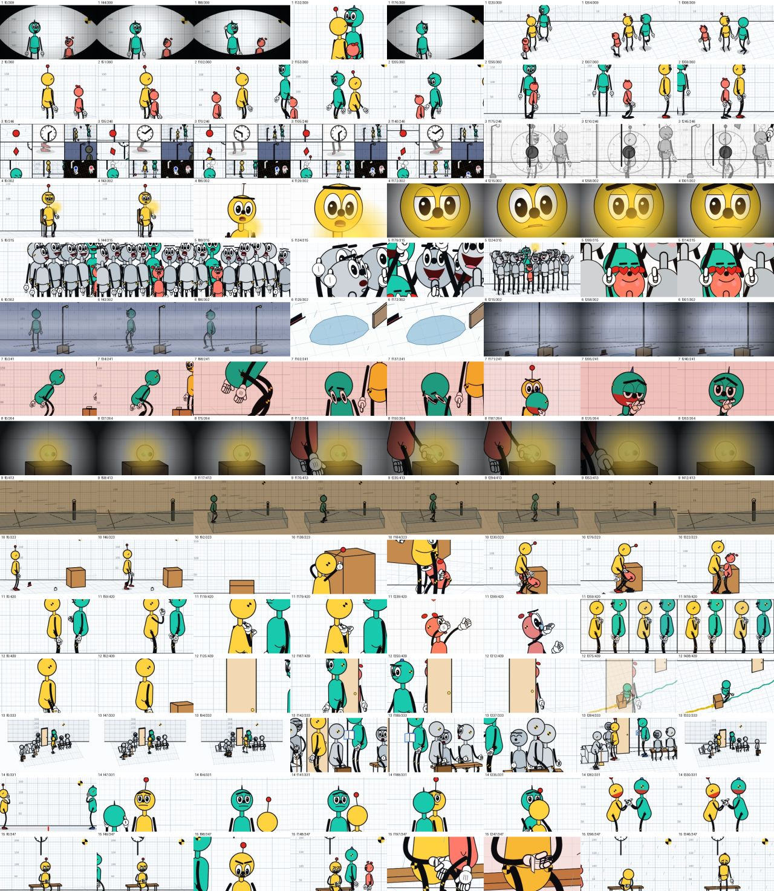
critic sheet Critic: sheet a
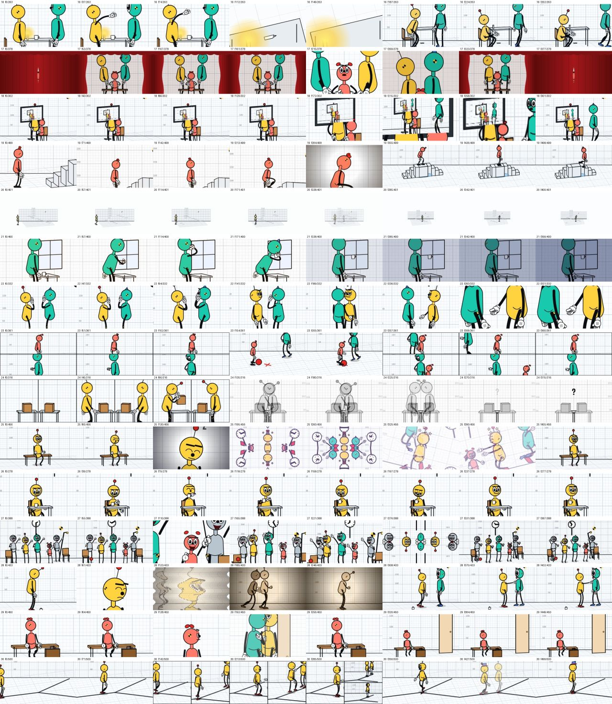
critic sheet Critic: sheet b
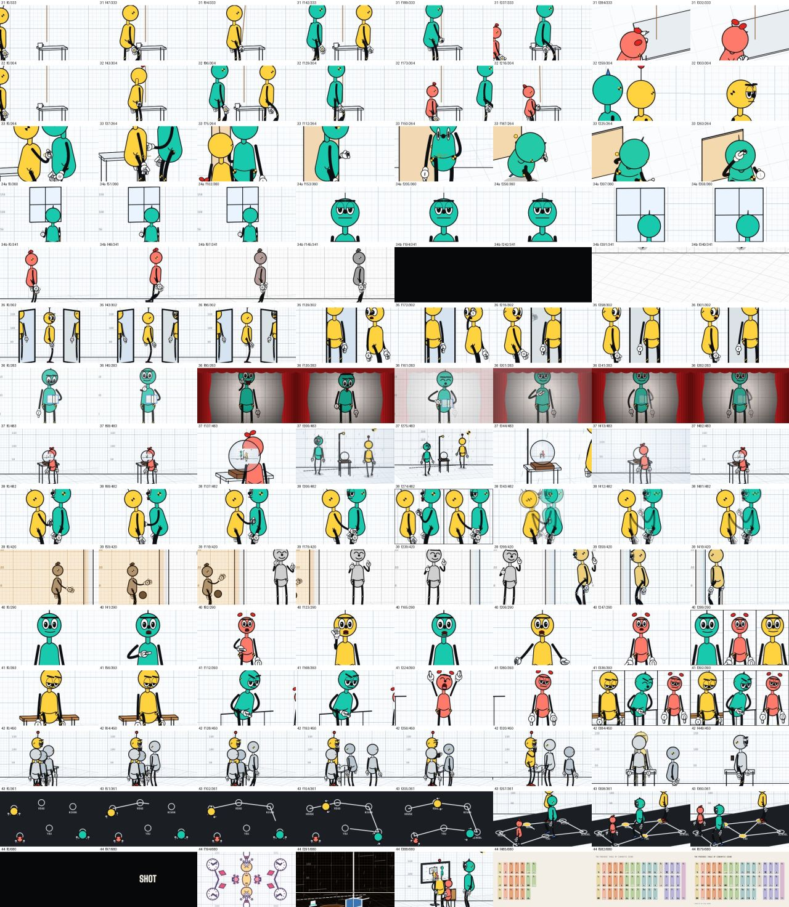
critic sheet Critic: sheet c
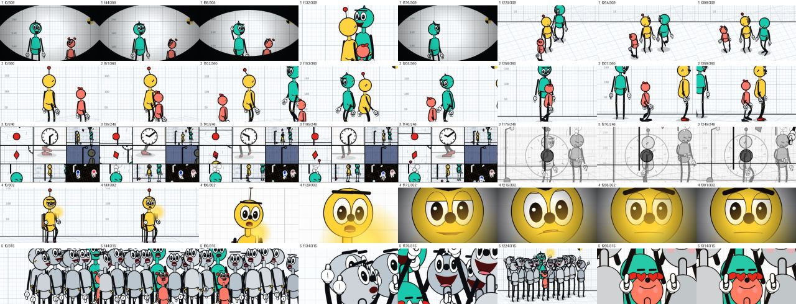
critic sheet Critic sheet, sign group A, page 1Process
- 32 signs were repaired after the critique; 5 critiques are kept as recorded disagreements where the suggested fix would…
- 32 signs were repaired after the critique; 5 critiques are kept as recorded disagreements where the suggested fix would contradict the sign's own operation text.
- Eight evenly spaced stills miss the decisive beat of several signs (the second Bola in 32, the thrown cup in 15, the falling cup in 16). A second round should judge clips, not stills.
- Every world in the film passes the Crash Lab checks. Three flags are declared rather than fixed: a heel grazing a stair edge for one frame (19), the old Bola off balance in her two turns (39), and the knock in the strong-destiny flashback (28).